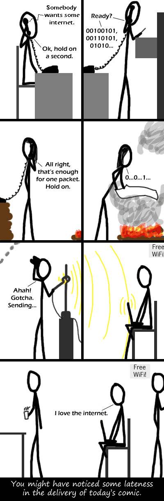

Comic JK 228
When I Feel Like It
⇤
<
?
>
⇥

⇤
<
?
>
⇥
Forum
.
RSS
.
Digg
.
Facebook
.
Reddit
.
Twitter
.
Stumbleupon
TCP overhead adds up when using coke signals. . . This seems extremely likely...I'm buying it. I wouldn't see some of the smoke rising! They have telephones, why are they using smoke? >It has to be wireless >> But... it isn't Wifi! It involves fire! D: >>> +1 wifi - wifire? close enough > It stands for Wireless-Fireless here. Remember that >:( I'm pretty sure there was a derp talk about burning a chunk of coal every time you masturbate. This could be possible! RFC 1149 is also a valid method of tachyon bytes. ^^^ That's been mentioned like 8 times already, but some rude person keeps deleting the mentions. *hey, I've been called many things in my time, but wow, now you've really hurt my feelings.* Yah. Why don't we just use enhanced cereal decoder code with more than one tone, over the phone system, with a robot to decode it and your mother to confirm it? ... What do you MEAN, that's already been done?! <- wat? WiFi = wild fire <Wireless Fireless... ok tmi fro the hoodrats That's not wifi! It was neither wireless nor fireless! Mammaluigi is all that matters. THAT part is WiFi. Your mother transmits ones and zeros by accepting or rejecting the dorky college boys waiting in line.